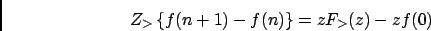
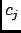

|  | (4.80) |
Within nMOLDYN is replaced by the autocorrelation function calculated in the framework of the autoregressive model, , as in Eqs. 4.75 and 4.76. The coefficients  are obtained by polynomial division and is a rest which does not contain information on the memory function within the time interval . The discrete memory function is therefore given by .
A remark concerning the discretization scheme (4.79) is in place here. The discrete convolution sum is effectively a first order approximation of the convolution integral. More sophisticated approximations could be used, but they would lead to less convenient expressions upon z-transformation. Correspondingly, we have chosen a first order approximation for the differentiation on the left-hand side of (4.72). In this way the first order (integro-)differential equation (4.72) is transformed into the first order difference equation (4.79).
However, this simple discretization scheme together with the use of the one-sided z-transform leads to a significant
error in  . It is clear from Eq. (4.72) that due to the symmetry of the autocorrelation function
(
), the derivative should vanish at However, in the discretized version it is
approximated by a forward difference that is always negative. A higher-order calculation shows that the estimate for
. It is clear from Eq. (4.72) that due to the symmetry of the autocorrelation function
(
), the derivative should vanish at However, in the discretized version it is
approximated by a forward difference that is always negative. A higher-order calculation shows that the estimate for
 that results from the procedure described above should be doubled.
that results from the procedure described above should be doubled.
![$\displaystyle \frac{z^{-N}}{\Delta t^2} \frac{\sum_{j=0}^N \left[VACF(j) -
VACF(j+1)\right] z^{N-j}} { \sum_{j=0}^N VACF(j)
z^{-j}}$](img274.gif)